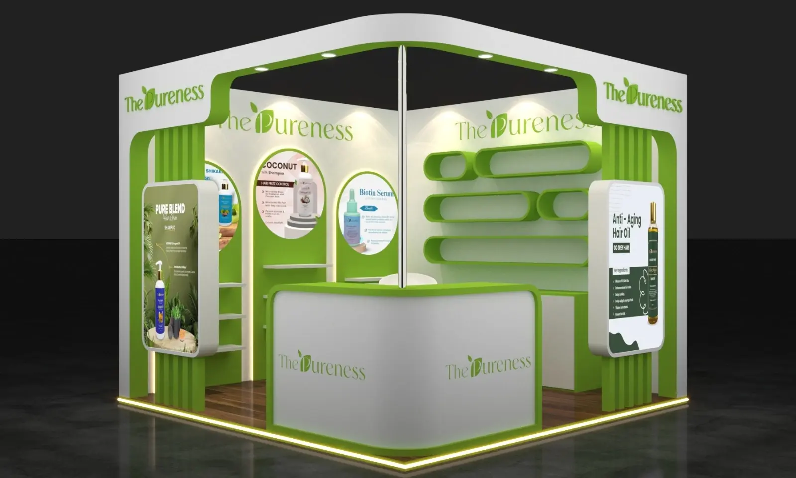
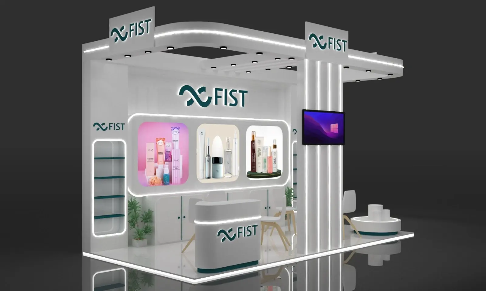
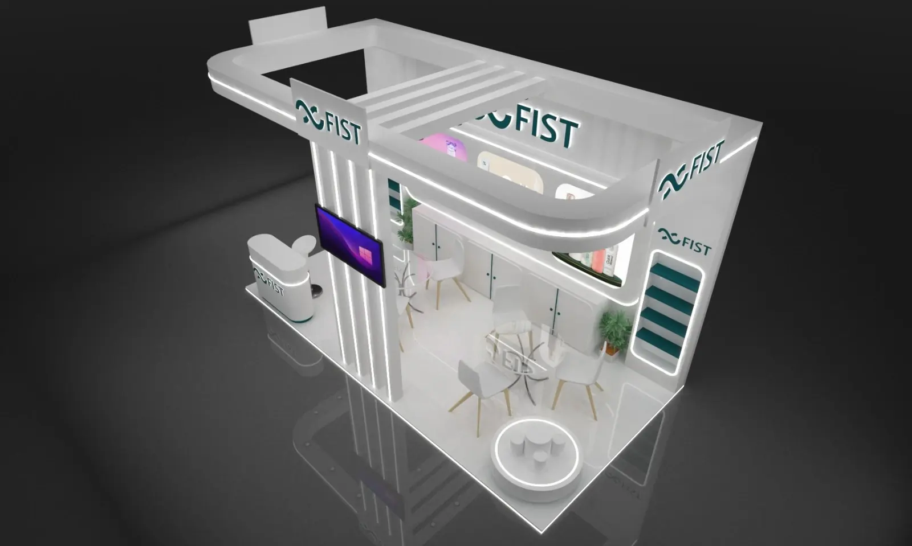
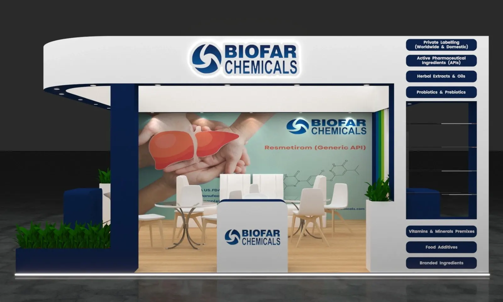
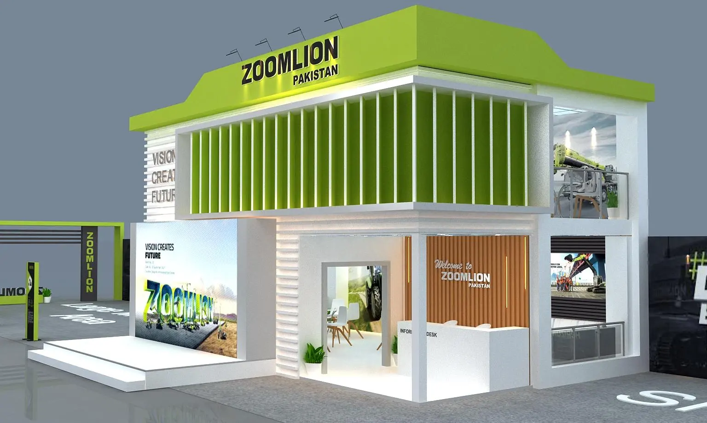

Trade Show Booth Design Ideas
Booth design ideas, organized by footprint.
Still researching concepts before talking to a designer? These are the layout patterns that come up most often at 10×10, 10×20 and 20×20 — a starting point, not a template to copy exactly. When you're ready to move from ideas to an actual layout, that's what custom trade show booth design is for.
10×10 Booth Ideas
At 100 square feet, every element earns its place. A back wall graphic with one clear message, a narrow counter angled toward the aisle rather than blocking it, and a single product or screen focal point usually outperforms a crowded layout.
10×20 Booth Ideas
Enough room to separate a product display zone from a short conversation area, without a full meeting room. An open corner entry on the long side tends to pull in more traffic than a single center-front entrance.
20×20 Booth Ideas
Room for distinct zones — display, demo, meeting and storage — but also room for the layout to feel empty if it isn't planned. A defined walking path between zones keeps the space feeling active rather than scattered.
Traffic Flow Ideas
Open corners generally out-perform boxed-in entries. Keep the first few feet of the booth uncluttered — that's where a visitor decides whether to step in or keep walking.
Branding & Messaging Ideas
One headline message, legible from the aisle, beats a wall of smaller claims. Save detail and differentiation for the conversation, not the back wall.
Lighting Ideas
Accent lighting on a hero product or graphic draws the eye faster than overall brightness. Avoid lighting that competes with neighboring booths for attention rather than directing focus inward.
Meeting Space Ideas
Even a small booth benefits from a spot — a high-top table, a bar stool pair — where a real conversation can happen without blocking the walkway.
Lead-Capture Ideas
Build a natural reason for a visitor to pause — a demo, a giveaway, a short conversation prompt — rather than relying on a scanner alone to do the work.
Common Design Mistakes
If a past booth hasn't performed the way you expected, it's worth checking whether one of a few common, fixable mistakes is the reason.
Booth Cost Guide
Working within a set budget? See a realistic breakdown of what drives trade show booth cost before you settle on a direction.
10×10 Trade Show Booth Ideas
At 100 square feet, a 10×10 booth is the most common footprint for first-time and budget-conscious exhibitors — and the one where every design decision matters most, since there's no room to hide a weak layout behind extra square footage.

One focal point, not several
In 100 square feet, a single clear message and a single visual focal point — one hero product, one screen, one graphic — will consistently outperform a booth that tries to say three things at once. Pick the one thing a visitor should remember from across the aisle.
Traffic flow in a 10×10 booth
A narrow counter angled toward the aisle, rather than placed flat across the entrance, keeps the booth from reading as a wall. Corner configurations — where the booth opens onto two aisles instead of one — generally pull in more foot traffic than a single center-front entrance.
Branding and messaging
With limited wall space, prioritize one headline message legible from several feet away over a list of smaller claims. Save the detail for the conversation that happens once someone has already stepped in.
Storage without losing floor space
A slim storage counter doubling as a demo surface, or a locking cabinet built into the back wall, keeps literature and giveaways out of sight without eating into the footprint you need for visitors to stand and talk.
Ready to turn a 10×10 concept into an actual floor plan? See custom trade show booth design, or check the cost guide if you're budgeting first.
10×20 Trade Show Booth Ideas
A 10×20 booth gives you enough room to do more than place a backwall and a counter. The strongest layouts use the footprint deliberately: establish the brand from the aisle, keep an obvious path into the space, and give visitors a reason to stop without blocking staff movement.


Layouts that make the aisle work for you
Start with what visitors should see first. A clear front-facing message can attract attention from the aisle, while the interior can hold product presentation, demonstrations, meeting space or storage. Avoid filling the center simply because the space is available.
Traffic flow in a 10×20 booth
Keep entry points visually open and avoid placing counters, displays or furniture where they create an immediate bottleneck. A simple circulation path can make a 10×20 booth feel more approachable and easier for staff to manage.
Branding and messaging
Use the larger footprint to create a clear visual hierarchy: one primary message, supporting information and focused product or service presentation. Large-format graphics should be legible from the aisle rather than relying on visitors to walk inside before they understand what you do.
Meeting, storage and display zones
If the booth needs seating, demonstrations or storage, zone those functions instead of letting them compete with the main message. The goal is a booth that supports conversations while still looking open from the aisle.
When you know your footprint but need help turning an idea into an actual layout, explore our custom trade show booth design service or review the trade show booth cost guide before planning your budget.
20×20 Trade Show Booth Ideas
At 400 square feet and up, a 20×20 or island footprint has room for real separation between functions — but that room is exactly what makes these booths harder to get right. A large space with no plan tends to read as empty rather than impressive.


Zoning a larger footprint
Divide the space into distinct areas — a display zone visible from every aisle, a demo or presentation area, a private meeting space, and storage — and connect them with a deliberate walking path. Without that plan, a 20×20 booth can end up with dead space in the middle that nobody uses.
Traffic flow from multiple aisles
Island booths are often open on all four sides, which means there's no single "front." Plan sightlines and entry points from every direction a visitor might approach, rather than designing around one assumed entrance.
Using vertical space
A larger footprint often justifies a second level, tower structure, or hanging sign — options that aren't practical at 10×10 or 10×20. These add presence visible from across the show floor, but need to be planned early since they typically affect show rules around rigging and height limits.
Keeping the space from feeling empty
Furniture, lighting and graphics spread too thinly across 400+ square feet can leave a booth feeling underbuilt even with a reasonable budget. Grouping activity into a few well-defined zones, rather than spreading it evenly, usually reads as more substantial.
Planning a booth at this scale usually benefits from a full custom design engagement rather than a self-built layout — share your footprint and goals through the free consultation to start.
Common questions
Booth design ideas, answered simply.
A 10x10 space is the most common starting point. It's small enough to design and staff efficiently, while still allowing room for a clear message, a product display and a spot to talk with visitors.
Enough that visitors can step in without feeling boxed in. As a rough guide, avoid filling more than roughly two-thirds of the footprint with structure and furniture, leaving clear room to move and gather.
It's not just size, it's zoning. A 10x10 usually needs one clear focal point, while a 20x20 has room for separate display, meeting and storage zones — which means it also has more room to feel empty or scattered if those zones aren't planned deliberately.
Yes. The layout principles — sightlines, entry points, zoning, focal points — apply whether you're working with a fully custom exhibit, a modular system, or a portable rental display. See trade show booth displays for how to choose between them.
Ready to Move Past Ideas?
Turn these ideas into a real design concept.
Share your booth size and goals, and we'll put together an initial layout built specifically around your space.